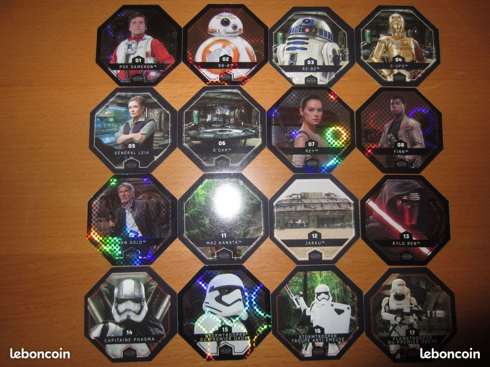
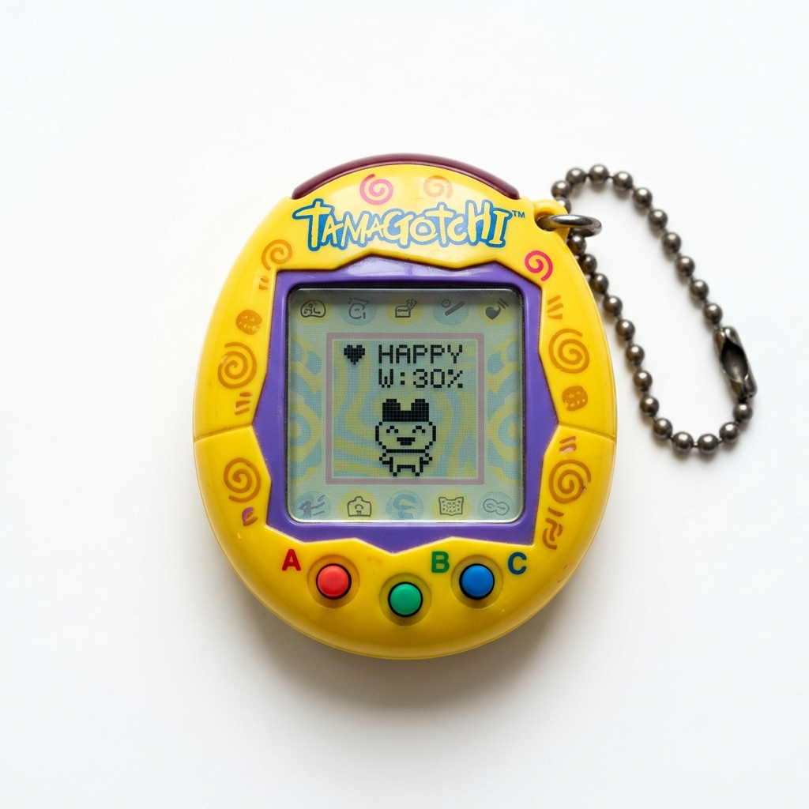
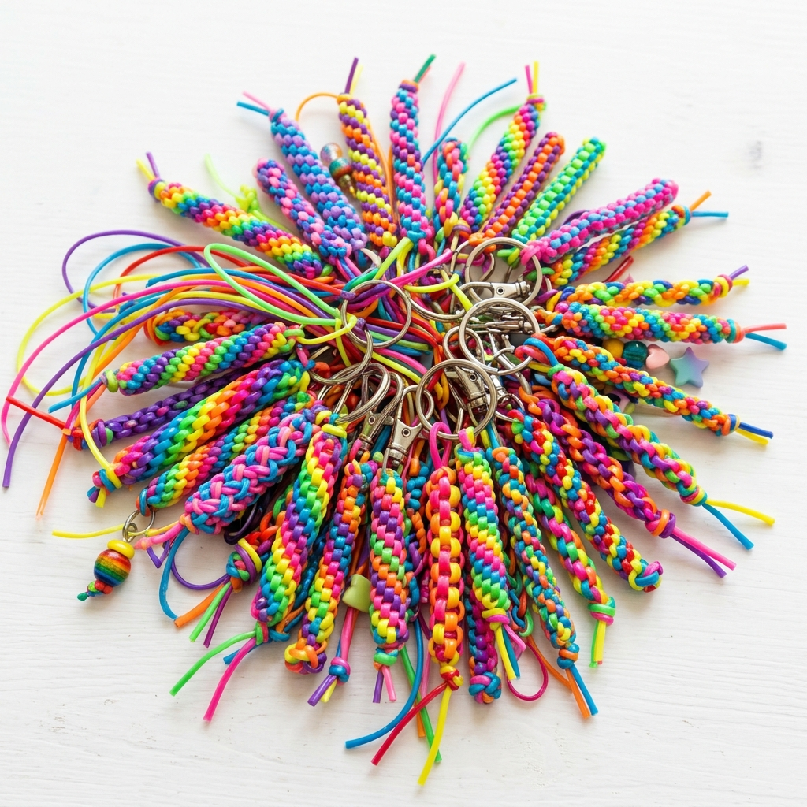
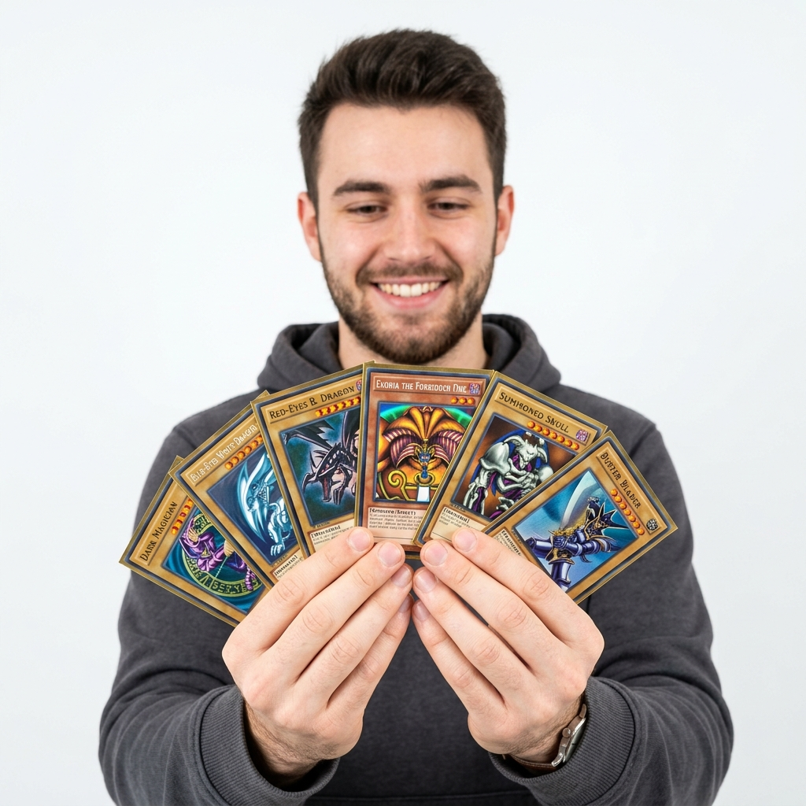
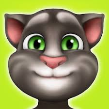

BAFA & BAFD
CONVERSATIONS & DEBATS
Rappelez aux jeunes que ces questions sont là pour échanger et réfléchir ensemble. Il n’y a pas de bonne ou de mauvaise réponse : chacun peut donner son avis dans le respect des autres.
DÉBATS
Questions de société
- Les sportifs professionnels sont-ils trop payés ?
- La guerre peut-elle être justifiée ?
- Les parents agissent-ils différemment s'ils ont une fille ou un garçon ?
- Pour ou contre l'instauration d'un revenu universel ?
- Les réseaux sociaux rendent-ils les gens plus seuls ?
- L'amitié est-elle plus forte ou plus importante que les liens familiaux ?
- Les jeux vidéo rendent-ils violents ?
- Est-ce que l'école devrait commencer plus tard le matin ?
- La peine de mort est-elle vraiment justifiable ?
- Comment notre regard sur le handicap et la différence influence-t-il l'inclusion en collectivité ? (court-métrage La petite casserole d'Anatole)
Culture, éthique et médias
- Est-ce que le prix des œuvres d'art est vraiment justifié ?
- Est-ce que le prix de la chirurgie esthétique est vraiment justifié ?
- Les plateformes de streaming (Netflix, Prime Video...) vont-elles tuer les salles de cinéma ?
- L'argent fait-il le bonheur ?
- Est-ce que la télé-réalité vaut vraiment le coup d'être regardée ?
- La mode et les marques influencent-elles trop la personnalité des jeunes ?
- Est-ce mieux de regarder un film au cinéma ou chez soi ?
- L'art peut-il révolutionner la société ?
- La fiction (films, séries, jeux vidéo) nous aide-t-elle à affronter le monde ou nous en détache-t-elle dangereusement ?
- Les héros de pop-culture (films, mangas) influencent-ils positivement ou négativement notre vision du monde ?
Relations et Adolescence
- Est-ce que l'amitié fille-garçon existe vraiment ?
- Les "petits mensonges" entre amis nuisent-ils toujours à l'amitié ?
- Est-ce que l'amour à distance peut réellement fonctionner ?
- Les soirées à thème : convivialité partagée ou conformisme forcé ?
- Les ados ont-ils trop de pression pour être parfaits sur Instagram et TikTok ?
- Est-ce que ça vaut vraiment le coup d'être en couple avec une grande différence d'âge ?
- Les défis TikTok sont-ils vraiment une bonne chose ?
- La puff et la cigarette : simple effet de mode pour faire comme les autres, ou vrai choix perso ? (vidéo de prévention Puff)
Psychologie et Philosophie
- Peut-on vraiment guérir de toutes ses blessures du passé, ou certaines cicatrices restent-elles à vie ?
- Peut-on aimer sincèrement deux personnes en même temps ou de la même façon ?
- Est-il parfois nécessaire de mentir ou cacher la vérité pour préserver les autres ?
- Est-il préférable d'exprimer systématiquement ses émotions ou de garder un jardin secret ?
- La nostalgie est-elle une force qui inspire ou un frein qui empêche d'avancer ?
- Vaut-il mieux faire face à une vérité douloureuse ou vivre dans une illusion rassurante ?
- Mieux vaut-il être beau ou intelligent ?
- Mieux vaut-il être célèbre ou avoir une vie tranquille ?
- Qui est arrivé en premier : l'œuf ou la poule ?
Écologie et Avenir
- Le progrès technologique parviendra-t-il à résoudre la crise écologique ?
- Faut-il interdire ou fortement taxer les comportements ultra-polluants (jets privés, yachts, fast-fashion) ?
- La transition écologique doit-elle passer par la décroissance ou par une croissance verte ?
- Coloniser d'autres planètes (comme Mars) : projet d'avenir ou fuite inutile face aux problèmes de la Terre ?
- Devrait-on rendre le vote obligatoire dès 16 ans pour impliquer les jeunes dans leur avenir ?
Sciences, IA et Technologie
- L'intelligence artificielle (IA) menace-t-elle de tuer la créativité et l'art humain ?
- Faut-il interdire l'accès aux réseaux sociaux et smartphones avant l'âge de 15 ans ?
- Un robot ou une IA pourra-t-il un jour ressentir des émotions authentiques ?
- La réalité virtuelle et le métavers risquent-ils de détruire nos relations sociales dans le monde réel ?
- Faut-il encourager les recherches sur l'allongement de la durée de vie humaine ?
- Si la science permettait de modifier génétiquement l'humain (ex : choisir ses gènes), devrions-nous l'autoriser ?
- Les robots vont-ils remplacer les humains dans tous les métiers ?
- Si le voyage dans le temps était possible, devrions-nous nous interdire de modifier le passé ?
- Les extraterrestres existent-ils ?
Éducation et Sport
- L'école classique prépare-t-elle réellement à la vie d'adulte et à la société actuelle ?
- Faut-il supprimer totalement les notes à l'école pour éliminer le stress et la comparaison ?
- Le sport professionnel transmet-il encore des valeurs de fair-play ou n'est-il guidé que par l'argent ?
- L'esprit de compétition à l'école est-il un moteur de réussite ou un facteur d'exclusion ?
- Faut-il enseigner obligatoirement l'écologie, le secourisme et la gestion de budget dès le collège ?
→ Jeu recapitulatif ici
🎭 Grands jeux de rôle & Débats scénarisés
- In the dark (Le jeu du Bunker) : Grand jeu de rôle et de débat pour environ 15 joueurs. Une catastrophe naturelle est imminente et seules 6 personnes pourront entrer dans le bunker pour repeupler l'humanité... Voir la règle complète et les 25 profils ici.
- L'Infiltré du Débat : Jeu de débat à identités cachées où 1 ou 2 saboteurs s'infiltrent dans le groupe pour semer le doute et glisser de fausses informations... Voir le déroulement et exemples d'animation ici.
- Le Speed-Debating Éclair : Duels d'éloquence de 2 minutes en face-à-face avec rotation rapide au gong et sujets loufoques ou engagés... Voir l'organisation et la liste de 15 sujets ici.
- Les 6 Chapeaux de De Bono : Méthode de réflexion collective où chaque joueur incarne un état d'esprit strict selon sa couleur de chapeau... Voir les 6 rôles et la méthode ici.
- Le Procès des Idées & Objets : Joute théâtralisée où un objet ou concept du quotidien est jugé devant un tribunal d'animés et de jeunes... Voir la mise en scène et exemples d'accusations ici.
- La Négociation des Ambassadeurs : Jeu de diplomatie secrète, d'alliances et de trahisons par factions interposées... Voir la mécanique détaillée et la fiche de jeu ici.
CONVERSATION
Les
36 questions qui provoquent l'amitié (ou plus ?❤️) Par le psychologue Arthur Aron
Section 1 : Tu préfères quoi ?
- Chaîne télé préférée ?
- Appli mobile favorite ?
- Magasin de jouets ?
- Marque de vêtements ?
- Réseau social ?
- Fast-food préféré ?
- Série/Film préférée ?
- Chanson ou artiste ?
- Matière scolaire ?
- Dessert préféré ?
- Endroit pour sortir entre potes ?
- Colo préféré ?
- Plat salé préféré ?
- Boisson préférée ?
- Moment préféré de la journée ?
- Saison préférée ?
Section 2: Idées sujets de conversation de société
- Avenir
- Voyage
- Musique/Concert
- Films/Séries/Animés
- Nourriture
- Famille
- Animaux
- Sport
- Études
- Travail
- Hobbies/Temps libre
- Livres
- Vacances
- Rêves/Projets
- Enfance
- Mode/Fringues
- Jeux
- Téléphone
- Art
- Langues
- Sports d’équipe
- Célébrités
- Applis
- Colonie/Animation
Section 3 : Êtes-vous concerné par cette mode d'enfance ?
-
Billes

-
Cartes Pokémon

-
Toupies Beyblade

-
Oufballs dans paquet de céréales

-
Bracelets forme

-
Hand spinner

-
Cartes Panini

-
Finger Skate

-
Zhu zhu pets

-
Slime

-
Rubik's cube

-
Bracelets brésiliens

-
Stikeez lidl

-
Dominos Asterix

-
Figurines pop

-
Jouet Kinder Surprise

-
Pogs

-
Hot Wheels

-
Le distributeur de PEZ

-
Ondamania

-
Carte Carrefour Dreamworks

-
Nerf

-
Loom Bracelets

-
Petshop

-
Jeton Star Wars

-
Tamagotchi

-
Scoubidous

-
Cartes Yu-Gi-Oh

Section 4 : Aviez-vous joué à ce jeu ?
-
Minecraft

-
Clash of Clans

-
Clash Royale

-
Hay Day

-
Smurf Village

-
Subway Surfers

-
Springfield

-
Angry Birds

-
Fruit Ninja

-
Temple Run

-
Flappy Bird

-
Les Sims

-
Age Of Empire

-
Among Us

-
Roblox

-
Fortnite

-
Call of Duty

-
League of Legends

-
Fifa

-
Mario Kart

-
GTA

-
Pokémon Go

-
Animal Crossing

-
World of Tanks

-
Roller Coaster Tycoon

-
Candy Crush

-
Boom Beach

-
Geometry Dash

-
Jetpack Joyride

- Farming Simulator
-
2048

-
Akinator

-
Tom

-
Crossy Road

-
Cut the rope

-
Doodle Jump

-
Hill Climb Racing

-
Paper.io

-
Rider

-
Slither.io

-
Zombie Tsunami

-
Piano Tile

Section 5 : Questions d'introspection et confidences
- Quel souvenir t’obsède encore alors que ça remonte à longtemps ?
- C’est quoi "le truc" qui te calme quand tout part en vrille ?
- C’est quoi ton plus grand "j'aurais dû" ?
- Si tu pouvais poser une question sans filtre à quelqu’un, ce serait quoi ?
- Quand ça va pas, tu préfères qu’on te parle ou qu’on te laisse tranquille ?
- T’as déjà eu peur de perdre quelqu’un avant même de l’avoir vraiment ?
- Qu’est-ce qui te fait sourire même quand t’as pas envie ?
- Y a quoi que tu regrettes de ne pas avoir dit à quelqu’un ?
- Qu’est-ce qui t’a vraiment changé… sans que tu t’en rendes compte ?
- Si tu pouvais obtenir un super-pouvoir (voler, invisibilité, télépathie...), lequel choisirais-tu et pourquoi ?
- Si tu devais vivre le restant de tes jours dans l'univers d'un film ou d'un livre, lequel choisirais-tu ?
- Si tu pouvais voyager dans le temps pour assister à un événement historique ou voir ton propre futur, où irais-tu ?
- Si tu devais te réincarner en un personnage de dessin animé ou de manga, lequel serais-tu ?